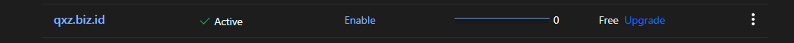

NAT VPS Playground
Pengalaman ngoprek NAT VPS
Intro
Di sini gua nulis catetan pengalaman gua ngoprek NAT VPS, cukup menarik karena berbeda dari VPS kek biasanya, gua pake cloudflare buat manage DNS website gua biar lebih praktis aja (maybe)
Sewa NAT VPS
Gua sewa di hostdata
Setup
Setting IP dan Port buat akses SSH ke server
Di clientarea masuk ke my services nanti pilih aja service vpsnya, scroll ke bawah nanti nemu Domain Forwarding
Kalo udah di klik, klik tab Add
Isi kek gini
Source portnya di sesuain sampe success
Akses ke server, pake putty masuking IP dan portnya yang tadi, 38.46.219.162 port 56561, kalo berhasil login kek gini
Setting IP dan Port buat akses webserver
Di clientarea masuk ke my services nanti pilih aja service vpsnya, scroll ke bawah nanti nemu Domain Forwarding
Kalo udah di klik, klik tab Add
Isi kek gini
Source portnya di sesuain sampe success
Coba akses
Setting domain di Cloudflare
Register akun cloudflare di sini
Kalo udah masuk tinggal masukin domain lo, klik ini:
Atau
Nanti muncul kek gini:
Ketik nama domainnya, abis itu continue
Di bagian select a plan, pilih yang Free
Di bagian Review your DNS records, isi nama domain dan IP (di sesuaikan)
Isi seperti ini, IP gua dapet pas abis order, di sesuain cok, terus di save
Abis itu continue
Pas disini nanti isi nameserver dari cloudflare, ke clientarea hostdata, gua dapetnya ini
alexa.ns.cloudflare.com venkat.ns.cloudflare.com
Di bagian clientarea, Domains -> My Domains -> Klik domainnya, klik bagian Nameservers, isi nameservernya, terus klik Change Nameservers
Ke cloudflare lagi, klik continue
Tinggal tungguin aja, nanti aktif sendiri cok
Kalo udah aktif kek gini

Abis itu masuk ke bagian SSL/TLS
Klik Edge Certificates
Scroll ke bawah, cari kek gini terus di centang
Bermain dengan Docker
Misal kita mau pasang traefik di vpsnya, pasang dulu ini docker composenya
version: '3'
services:
reverse-proxy:
# The official v3 Traefik docker image
image: traefik:v3.3
# Enables the web UI and tells Traefik to listen to docker
command: --api.insecure=true --providers.docker
ports:
# The Web UI (enabled by --api.insecure=true)
- "8080:8080"
volumes:
# So that Traefik can listen to the Docker events
- /var/run/docker.sock:/var/run/docker.sock
Bikin file namanya docker-compose.yml, isinya kode diatas, abis itu di save filenya
Terus ketik docker-compose up -d reverse-proxy, cek lagi pake perintah docker ps -a buat mastiin servicenya berjalan apa engga
root@tolol:~# docker ps -a CONTAINER ID IMAGE COMMAND CREATED STATUS PORTS NAMES c68d9ea1d267 traefik:v3.3 "/entrypoint.sh --ap…" 22 minutes ago Up 22 minutes 80/tcp, 0.0.0.0:8080->8080/tcp, :::8080->8080/tcp root_reverse-proxy_1
Di clientarea masuk ke my services nanti pilih aja service vpsnya, scroll ke bawah nanti nemu Domain Forwarding
Kalo udah di klik, klik tab Add
Isi kek gini
Source port, di sesuain sampe success
Coba akses
Kalo mau pasang service berbasis docker yang laen, caranya kurang lebih sama kek gitu
Kesimpulan
Ini artikel gak jelas cok